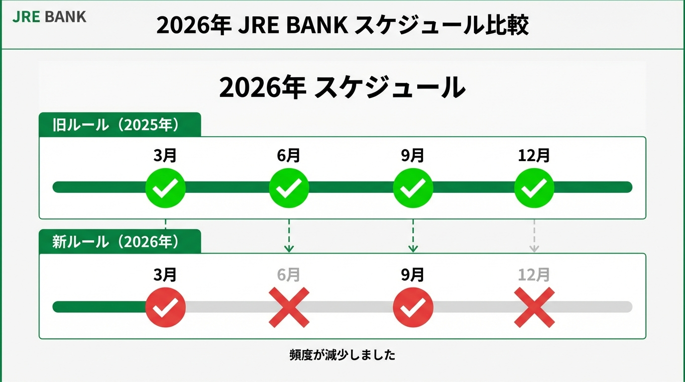

「JRE BANK、最近オワコン化してない？」
2024年のサービス開始当初、JR東日本ユーザーを熱狂させた「JRE BANK」。 しかし、2026年春を迎えた今、SNSでは一部特典のルール変更（改悪）を嘆く声が上がっています。
特に衝撃だったのが、「どこかにビューーン！」関連特典の判定回数減少です。
僕もメインバンクの一つとして愛用していますが、結論から言うと**「50万円預けて放置」している人にとっては、依然として最強のサブバンク**です。 しかし、旅行特典をガッツリ狙っていた「300万円運用勢」には厳しい春になるかもしれません。
今回は、2026年3月から適用される新ルールの真実と、**「結局いくら預けるのが一番得なのか？」**を、最新の金利・特典価値に基づいて徹底シミュレーションします。
2026年3月の衝撃：「判定月」が減った？
まず、最も重要な変更点（改悪）について整理します。 これまでのJRE BANKは、特典の判定タイミングが「年4回（四半期ごと）」あるのが魅力でした。しかし、2026年3月からは一部の旅行系特典の判定頻度が変更になります。
変更点の要約
- 優待割引券（4割引券）: 年2回（変更なし）
- Suicaグリーン券: 年4回（変更なし・ここが重要！）
- 「どこかにビューーン！」関連特典: 年4回 → 年2回（3月・9月）に激減

これが何を意味するか？ これまでは「あ、今月ちょっと旅行行きたいな」と思ったタイミングで口座にお金を入れておけば、次の判定でクーポンが貰えるチャンスが多かった。 しかしこれからは、「3月」と「9月」という決算期に確実に残高キープしていないと、半年間も特典を逃すことになります。
特に3月は新生活で出費がかさむ時期。「うっかり残高が50万円（または300万円）を下回っていた」というミスが命取りになります。
なぜ「50万円」が最強の防衛ラインなのか
判定回数が減っても、僕がJRE BANKを解約しない理由はシンプルです。 「資産50万円」での運用利回りが、他のネット銀行を圧倒しているからです。
ここで、2026年2月現在の一般的なネット銀行の金利と、JRE BANKの「特典をお金に換算した場合の利回り」を比較してみましょう。
シミュレーション条件
- 預入金額: 50万円
- 比較対象: 一般的なネット銀行の好金利（年0.2%と仮定）
- JRE BANK特典:
- Suicaグリーン券（モバイルSuica）：年4枚
- 優待割引券（4割引）：年2枚（※資産50万円コースの場合）
利回り比較（年間）
| 項目 | 一般的なネット銀行 (0.2%) | JRE BANK (特典換算) |
|---|---|---|
| 税引後利息 | 約796円 | 約796円 (※金利が同じと仮定) |
| グリーン券価値 | 0円 | 4,000円相当 (1,000円×4枚) |
| 4割引券価値 | 0円 | 約3,000円相当 (※新幹線利用時想定) |
| 合計メリット | 約796円 | 約7,796円 |
| 実質利回り | 0.15% | 約1.5% !! |
ご覧の通りです。 50万円を預けておくだけで、実質利回りは驚異の1.5%超え。 株のようなリスク資産ならともかく、元本保証の銀行預金でこの数字は異常です。
「どこかにビューーン！」の判定が減ろうが関係ありません。 「通勤や帰省でグリーン車に乗れる」という日常のQOL（生活の質）を上げる特典は、年4回キープされている。 これこそが、2026年もJRE BANKを持ち続けるべき最大の理由です。
注意：2026年3月からの「JRE POINT」交換レート改定
もう一つ、忘れてはいけないのがJRE POINTの特典チケット交換レートの変更です。 2026年3月14日のダイヤ改正に合わせて、ポイントで新幹線に乗れる「JRE POINT特典チケット」の必要ポイント数が見直されます。
- 短距離区間: 据え置き または 若干減少
- 長距離区間: 必要ポイント増加（実質値上げ）
もし、JRE BANKの利用で貯まったポイントが大量にあるなら、3月13日までに予約を済ませておくのが鉄則です。特に東北・北海道新幹線などの長距離区間を利用予定の方は、今のうちに発券しておきましょう。
結論：3月25日までに「50万円」入金せよ
2026年春のJRE BANK攻略法をまとめます。
- 「どこかにビューーン」狙いの人は要注意: 判定チャンスが年2回に減った。3月と9月は絶対に残高を動かすな。
- ライトユーザーは勝ち組: 50万円預けて「グリーン車」と「4割引券」を貰うスタイルなら、改悪の影響はほぼゼロ。
- ポイントはすぐ使う: 3月14日のレート改定前に、長距離新幹線の予約を。
JRE BANKは、仕組みさえ理解していれば、これほど「手堅い」ポイ活はありません。 次の判定日は3月25日（想定）。 今のうちに他行から資金を移動させ、50万円の壁を確実に超えておきましょう。
「電車に乗るだけで優越感」。この体験は、何物にも代えがたいですよ。